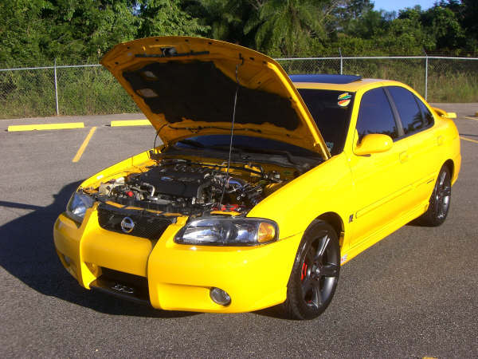
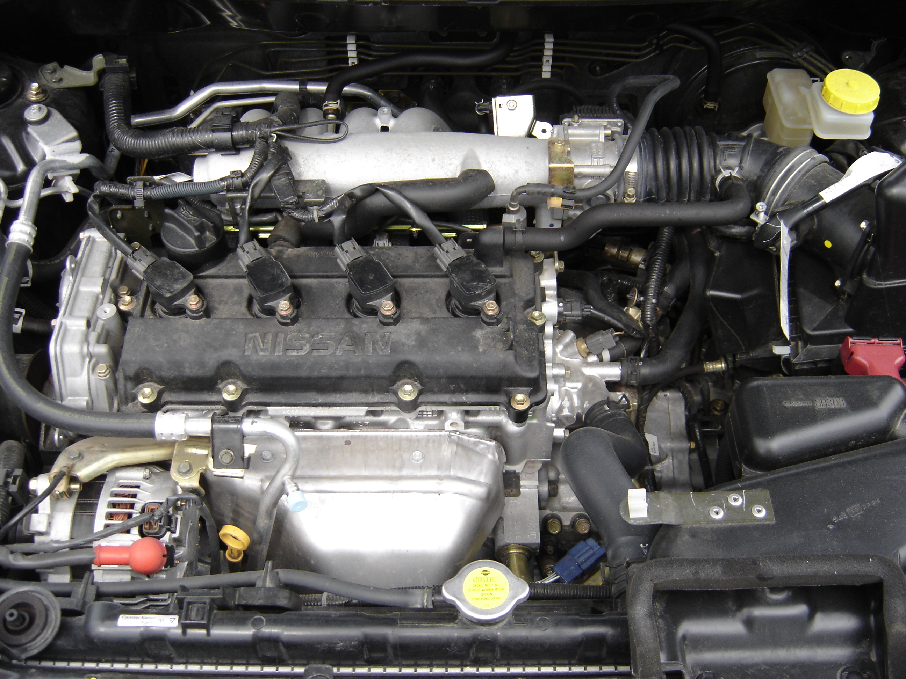
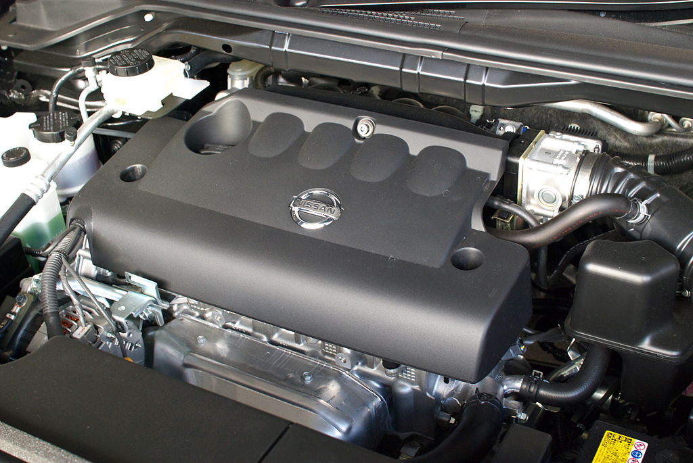
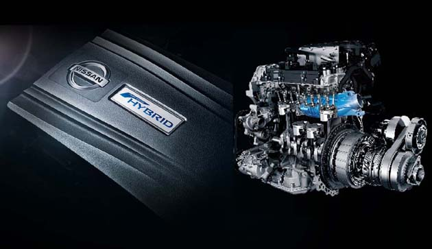

La familia QR de motores de cuatro cilindros en línea de Nissan se introdujo en 2000 y oscila entre 2,0 L y 2,5 L de cilindrada. Estos motores son de aluminio, doble árbol de levas en cabeza (DOHC), diseños de cuatro válvulas con sincronización variable de válvulas e inyección directa opcional.
El 2.0L (1998 cc) QR20DE produce 147 hp (110 kW) y 148 lb · ft (200 N · m) El diámetro interior es de 89 mm con una carrera de 80.3 mm y una relación de compresión de 9.9: 1. El QR20DE fue reemplazado con el MR20DE.
 QR25DE El QR25DE es una variante de 2.5 L (2488 cc) construida con bielas de acero fundido, una cadena de distribución de acero, ejes de equilibrio contrarrotativos y un colector de admisión de aluminio. El diámetro del motor es de 89 mm con una carrera de 100 mm y una relación de compresión que varía de 9.5: 1 a 10.5: 1 dependiendo del vehículo. La salida tiene una potencia nominal de 175 hp (130 kW) a 6000 rpm con 180 lb · ft (244 N · m) de torque a 4000 rpm en los modelos Altima 2.5 y Sentra SE-R. Las altimas que cumplen con PZEV crean 170 hp (130 kW) y 175 lb-ft (237 N⋅m) de torque. En el 2005+ Nissan Frontier, el QR25DE genera 152 hp (113 kW) y 171 lb-ft (232 Nm) de torque.
El QR25DER es similar al QR25DE pero tiene un sobrealimentador para aumentar la potencia y está acoplado con un motor eléctrico de 15 kW, un sistema de doble embrague y una batería de iones de litio para aumentar la eficiencia del combustible. El motor tiene una relación de compresión de 9.1: 1 y produce una combinación de 250 hp (190 kW) a 5600 rpm y 243 lb⋅ft (329 N⋅m) a 3600 rpm.
